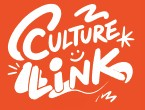
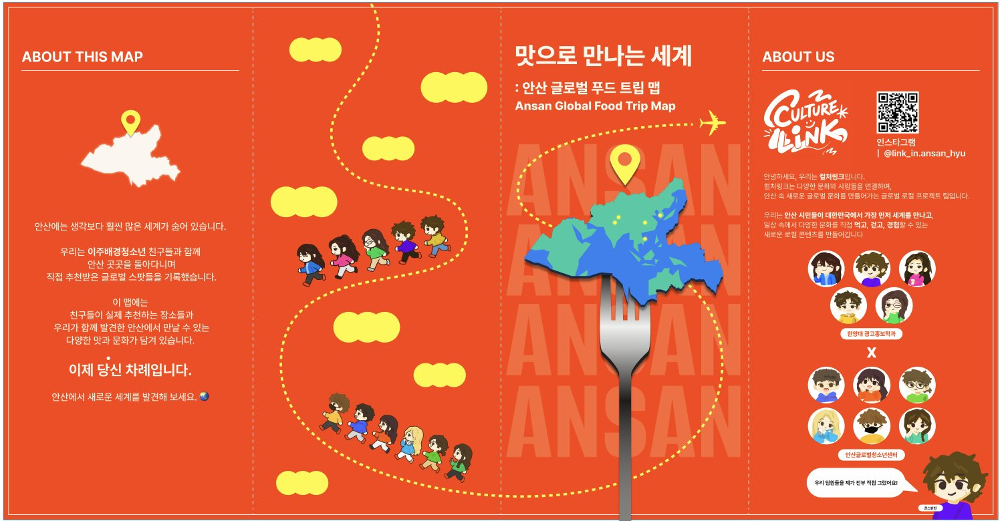
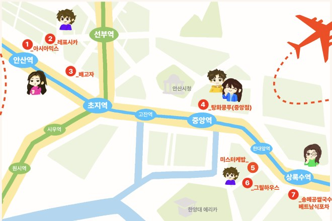
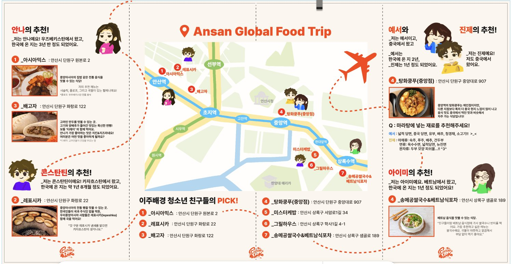
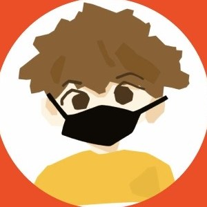
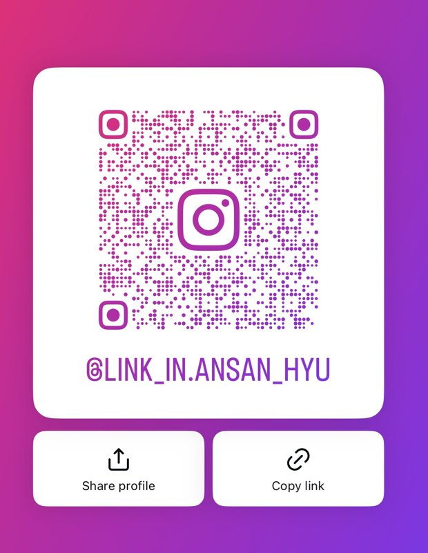

아시아믹스 Asia Mix
안산시 단원구 원본로 2
중앙아시아의 집밥 같은 전통 음식을 맛볼 수 있는 식당! 추천 메뉴는 샤슬릭, 플로프, 그리고 국물이 있는 펠메니. Home-style traditional Central Asian food. Try the shashlik, plov and pelmeni in broth.
안나 · 우즈베키스탄Anna · Uzbekistan

Culture LinkCULTURE LINK · 2026
안산 글로벌 푸드 트립 맵Ansan Global Food Trip Map
안산에는 생각보다 훨씬 많은 세계가 숨어 있습니다. 우리는 이주배경청소년 친구들과 함께 안산 곳곳을 돌아다니며 직접 추천받은 글로벌 스팟들을 기록했습니다. Ansan hides far more of the world than you'd think. Together with our friends from migrant backgrounds, we walked around Ansan and recorded the global spots they personally recommend.

ABOUT US
컬처링크는 다양한 문화와 사람들을 연결하여, 안산 속 새로운 글로벌 문화를 만들어가는 글로벌 로컬 프로젝트 팀입니다. Culture Link is a global-local project team that connects different cultures and people to build a new global culture inside Ansan.
우리는 안산 시민들이 대한민국에서 가장 먼저 세계를 만나고, 일상 속에서 다양한 문화를 직접 먹고, 걷고, 경험할 수 있는 새로운 로컬 콘텐츠를 만들어갑니다. We create local content that lets Ansan residents be the first in Korea to meet the world — to eat, walk and experience diverse cultures in everyday life.
WHAT WE DID
청소년센터 친구들과 한양대 학생들이 한 팀이 되어, 각자의 아이디어를 하나로 모았습니다. "안산 속 세계를 맛으로 소개하자"가 우리의 답이었어요. Youth center members and Hanyang students formed one team and merged everyone's ideas into one: introduce the world inside Ansan through food.
우즈베키스탄, 카자흐스탄, 중국, 베트남 출신 친구들이 실제로 자주 가는 식당을 추천하고, 주소와 메뉴, 이야기를 직접 조사했습니다. Friends from Uzbekistan, Kazakhstan, China and Vietnam recommended places they actually go to, and we researched addresses, menus and stories ourselves.
팀원 11명 모두를 귀여운 캐릭터로 직접 그려서, 맵과 팸플릿 곳곳에서 친구들이 직접 맛집을 소개하도록 만들었습니다. All 11 team members were hand-drawn as characters, so on the map and pamphlet each friend introduces their own spot.
안산역부터 상록수역까지, 7곳의 글로벌 맛집을 지하철 노선 위에 표시한 3단 접이식 팸플릿을 완성했습니다. We finished a tri-fold pamphlet that marks 7 global restaurants along the subway line from Ansan Station to Sangnoksu.
@link_in.ansan_hyu 계정을 운영하며 5월 말부터 6월까지 카드뉴스로 맛집과 프로젝트를 소개했습니다. We ran @link_in.ansan_hyu and introduced the restaurants and the project with card-news posts from late May through June.
ANSAN GLOBAL FOOD TRIP

안산시 단원구 원본로 2
중앙아시아의 집밥 같은 전통 음식을 맛볼 수 있는 식당! 추천 메뉴는 샤슬릭, 플로프, 그리고 국물이 있는 펠메니. Home-style traditional Central Asian food. Try the shashlik, plov and pelmeni in broth.
안산시 단원구 화랑로 22
중앙아시아의 전통 빵을 맛볼 수 있는 곳. "갓 구운 레표시카 냄새를 맡으면 카자흐스탄이 생각나요." Traditional Central Asian bread. "The smell of freshly baked lepeshka reminds me of Kazakhstan."
안산시 단원구 화랑로 122
고려인 만두를 맛볼 수 있는 곳. 고기와 양배추가 들어간 푹신한 찐빵! 안나가 가장 좋아하는 맛은 치킨&치즈. Koryo-saram dumplings — soft steamed buns filled with meat and cabbage. Anna's favorite: chicken & cheese.
안산시 단원구 중앙대로 907
체인점이지만 다른 지점보다 특히 더 중국 현지 느낌이 많이 나요. 중국에서 먹던 맛과 비슷해서 자주 가는 곳! A chain, but this branch tastes especially like China — close to what we ate back home, so we go often.
예서Yeseo — 넓적 당면, 중국 당면, 유부, 배추, 청경채, 소고기wide glass noodles, Chinese noodles, tofu puffs, napa cabbage, bok choy, beef
진제Jinje — 숙주, 푸주, 배추, 건두부, 옥수수면, 넓적당면, 뉴진면, 두부 모양 피쉬볼bean sprouts, tofu skin, cabbage, dried tofu, corn noodles, wide noodles, fish balls
안산시 상록구 서암로1길 34
한양대 에리카 근처에서 만나는 케밥 맛집. 친구들이 함께 발견한 상록구의 세계 맛. A kebab spot near Hanyang ERICA — a world flavor in Sangnok-gu the team found together.
안산시 상록구 학사1길 4-1
한대앞역 근처, 친구들과 함께 가기 좋은 그릴 요리 식당. Near Hanyang Univ. Station — a grill restaurant that's great to visit with friends.
안산시 상록구 샘골로 189
베트남 음식을 맛볼 수 있는 식당. "친구들이랑 가서 쌀국수나 반미를 먹어요. 국물이 따뜻하고 깔끔해서 부담 없이 먹기 좋아요." Vietnamese food. "I go with friends for pho or banh mi. The broth is warm and clean — easy to enjoy."
THE PAMPHLET
이미지를 누르면 크게 볼 수 있어요.Tap an image to enlarge.

OUR TEAM

"우리 팀원들을 제가 전부 직접 그렸어요!""I drew every one of our team members myself!"— 콘스탄틴Konstantin
MY ROLE
"모두의 의견이 달라서 처음엔 어려웠지만, 리더가 아이디어를 하나로 모아주면서 진짜 팀워크가 무엇인지 배웠습니다.""Everyone had different opinions, so it was hard at first — but as our leader brought the ideas together, I learned what real teamwork is."

FOLLOW US
안산에서 새로운 세계를 발견해 보세요. 프로젝트의 모든 이야기는 인스타그램에 있어요.Discover a new world in Ansan. The whole story lives on our Instagram.
Instagram @link_in.ansan_hyu →